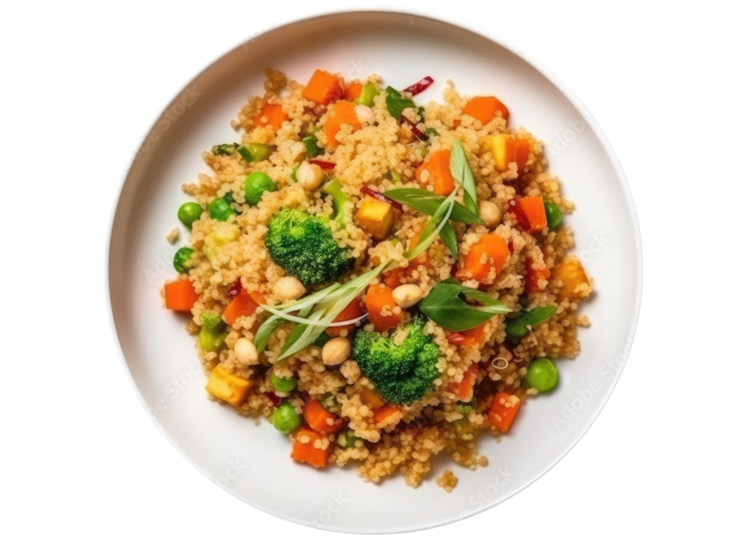

Quinoa and Vegetable Stir-Fry
This quick and easy stir-fry is packed with vegetables and protein-rich quinoa. Follow these simple steps to create a healthy meal:
- Cook quinoa according to package instructions.
- Heat olive oil in a pan and add chopped onions and garlic.
- Add diced vegetables like bell peppers, carrots, and broccoli.
- Stir-fry until vegetables are tender.
- Add cooked quinoa and stir to combine.
- Season with soy sauce and a pinch of salt and pepper.
- Serve hot and enjoy!
